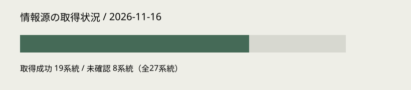
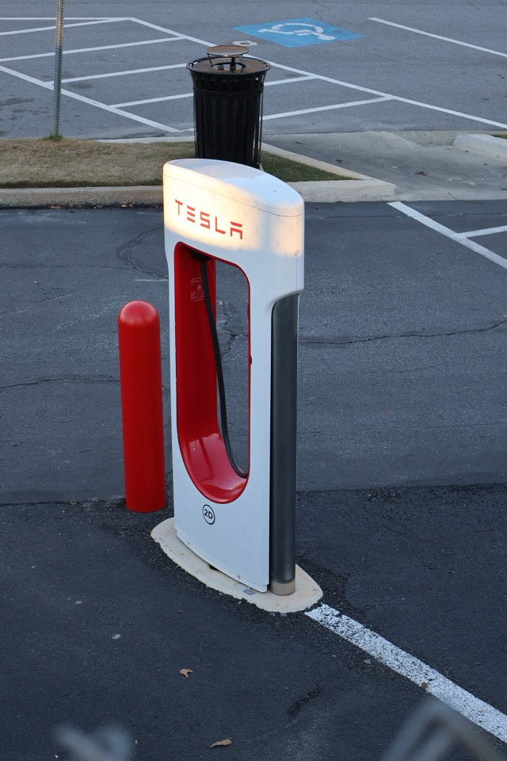

HW3 + HW4 · AUTOMATED SOURCE MONITOR
2026.11.16｜Tesla FSD・世界の自動運転とオーナーニュース
FSD・世界の自動運転・購入・充電などの27系統中、19系統を取得。取得できなかった情報も明示します。

Darin Caggiano / Wikimedia Commons · CC BY-SA 4.0 · 縮小版。表示枠に合わせたトリミングあり。
これは取得結果の日本語レポートです。海外見出しは未検証の報道案内。国内の解禁・在庫・開業を自動認定する記事ではありません。
今回検出した更新
確定できる新規掲載・構造化販売情報の変化はありませんでした。取得できなかった情報源について変化がないとは判断できません。
公式発表・海外報道への入口
初回取得時の見出しは既存の参考記事です。見出しの掲載順と公開日は原文で確認してください。過去記事の再配信もあり得ます。
- 世界の自動運転／未検証 · 新規検出PS5 版『テストドライブ アンリミテッド ソーラークラウン』×『頭文字 D』コラボ開催中！ 伝説のマシンで香港島の峠を攻めよう！併せてコラボトレーラーも公開！ – 3GOO Japan - 3GO…世界の自動運転報道の発見用RSS / 原文公開日 Mon, 16 Nov 2026 02:28:10 GMT
- 世界の自動運転／未検証 · 新規検出【業界人必読】自動運転ラボ 国内唯一のロボタクシー白書「ロボタクシー最新動向」を公開！ - 自動運転ラボ世界の自動運転報道の発見用RSS / 原文公開日 Sun, 15 Nov 2026 22:05:39 GMT
- 海外報道・未検証 · 新規検出Man Turns On Full Self-Driving In His Tesla. Then He Pulls A Ferris Bueller To Fool It: 'So Here's …世界FSD報道の発見用RSS / 原文公開日 Sun, 15 Nov 2026 14:09:07 GMT
- 海外報道・未検証 · 新規検出Tesla Was Supposed To Be Losing Europe. The Data Says Otherwise - InsideEVs世界FSD報道の発見用RSS / 原文公開日 Sun, 15 Nov 2026 12:22:18 GMT
- 海外報道・未検証 · 新規検出Tesla quietly drops the cheapest all-wheel drive Model Y in the US - ArenaEV - ArenaEV世界FSD報道の発見用RSS / 原文公開日 Sun, 15 Nov 2026 22:11:01 GMT
- 海外報道・未検証 · 新規検出Tesla FSD Deer Clip Spreads, but 41 mph Is Unverified - shattered.io世界FSD報道の発見用RSS / 原文公開日 Sun, 15 Nov 2026 06:38:25 GMT
- 規制当局・原文確認 · 新規検出Departments of Commerce and Transportation Announce $109 Million in Grants to Modernize 911 Service…規制当局の関連発表（RSS発見） / 原文公開日 Thu, 29 Apr 2021 08:15:39 GMT
- 規制当局・原文確認 · 新規検出NHTSA Approves More Than $800M for States to Make Roads Safer - NHTSA | National Highway Traffic Sa…規制当局の関連発表（RSS発見） / 原文公開日 Mon, 29 Sep 2025 18:16:31 GMT
- 購入・補助金／未検証 · 新規検出次世代自動車の購入費を補助します - 岡崎市公式ホームページ日本のTesla購入・補助金の報道発見 / 原文公開日 Wed, 11 Nov 2026 08:00:00 GMT
- 購入・補助金／未検証 · 新規検出今週の展望：ECB政策金利発表が控える；アルファベット、テスラ、インテルの決算発表；世界PMI速報値が判明 - TradingKey日本のTesla購入・補助金の報道発見 / 原文公開日 Sun, 15 Nov 2026 07:20:34 GMT
- 購入・補助金／未検証 · 新規検出これでいいのかEV補助！ 間近に迫る大幅減額の理由と“補助金頼り”の経済振興の是非（webCG） - Yahoo!ニュース日本のTesla購入・補助金の報道発見 / 原文公開日 Fri, 13 Nov 2026 23:04:00 GMT
- 購入・補助金／未検証 · 新規検出スペースXとテスラの合併協議が進展、成立なら3450億円のビットコイン保有に - CoinPost日本のTesla購入・補助金の報道発見 / 原文公開日 Thu, 12 Nov 2026 21:12:06 GMT
日本のオーナーへの確認ポイント
HW3・HW4とも、海外の提供開始・価格・バージョンを国内条件へ直接適用しないでください。在庫は公式商品画面、新しい充電拠点は公式詳細と車内地図を確認します。国内の開始時期を推定できる新たな根拠は、この定型レポートでは認定していません。
購入前・オーナー向け：今日の確認ポイント
購入特典は対象車・期限・残枠、補助金は登録日別の額・申請期限・予算終了見込みを分けて確認。FSDはHWと契約、アップデートは日本向け配信条件を確認します。アクセサリーは車両世代・実寸・国内販売条件を照合します。
本日のモデル別・年式別中古相場
元データ：カーセンサーの公開相場表。価格帯ごとの分布から中央値の所属範囲を求めたものです。グレード・距離・修復歴の構成をそろえた指数ではありません。
カーセンサー Model 3 掲載価格相場
取得 2026-11-16T11:38:28+09:00 / 掲載 187台。出典：掲載価格分布 ↗
| 登録年の区分 | 掲載台数 | 中央値が属する範囲（本体価格） | 注意 |
|---|---|---|---|
| 2019年 | 13台 | 185万円以上〜205万円未満 | 掲載価格・成約価格ではない |
| 2020年 | 17台 | 205万円以上〜225万円未満 | 掲載価格・成約価格ではない |
| 2021年 | 70台 | 225万円以上〜245万円未満 | 掲載価格・成約価格ではない |
| 2022年 | 58台 | 265万円以上〜285万円未満 | 掲載価格・成約価格ではない |
| 2023年 | 8台 | 345万円以上〜385万円未満 | 少数標本（10台未満） |
| 2024年 | 14台 | 365万円以上〜405万円未満 | 掲載価格・成約価格ではない |
| 2025年 | 6台 | 385万円以上〜425万円未満 | 少数標本（10台未満） |
国内導入前の年式区分 1台を表から除外。入力誤りや並行輸入を自動判定していません。
カーセンサー Model Y 掲載価格相場
取得 2026-11-16T11:38:28+09:00 / 掲載 141台。出典：掲載価格分布 ↗
| 登録年の区分 | 掲載台数 | 中央値が属する範囲（本体価格） | 注意 |
|---|---|---|---|
| 2022年 | 51台 | 275万円以上〜295万円未満 | 掲載価格・成約価格ではない |
| 2023年 | 46台 | 295万円以上〜315万円未満 | 掲載価格・成約価格ではない |
| 2024年 | 12台 | 375万円以上〜395万円未満 | 掲載価格・成約価格ではない |
| 2025年 | 26台 | 495万円以上〜535万円未満 | 掲載価格・成約価格ではない |
| 2026年以降 | 6台 | 515万円以上〜555万円未満 | 少数標本（10台未満） |
カーセンサー Model S 掲載価格相場
取得 2026-11-16T11:38:28+09:00 / 掲載 26台。出典：掲載価格分布 ↗
| 登録年の区分 | 掲載台数 | 中央値が属する範囲（本体価格） | 注意 |
|---|---|---|---|
| 2014年 | 2台 | 0万円以上〜180万円未満 | 少数標本（10台未満） |
| 2015年 | 2台 | 300万円以上〜460万円未満 | 少数標本（10台未満） |
| 2016年 | 3台 | 220万円以上〜240万円未満 | 少数標本（10台未満） |
| 2017年 | 2台 | 200万円以上〜340万円未満 | 少数標本（10台未満） |
| 2018年 | 6台 | 320万円以上〜380万円未満 | 少数標本（10台未満） |
| 2019年 | 1台 | 240万円以上〜260万円未満 | 少数標本（10台未満） |
| 2020年 | 5台 | 420万円以上〜440万円未満 | 少数標本（10台未満） |
| 2021年 | 1台 | 560万円以上〜580万円未満 | 少数標本（10台未満） |
| 2023年 | 4台 | 860万円以上 | 少数標本（10台未満） |
カーセンサー Model X 掲載価格相場
取得 2026-11-16T11:38:28+09:00 / 掲載 44台。出典：掲載価格分布 ↗
| 登録年の区分 | 掲載台数 | 中央値が属する範囲（本体価格） | 注意 |
|---|---|---|---|
| 2016年 | 1台 | 0万円以上〜285万円未満 | 少数標本（10台未満） |
| 2017年 | 14台 | 365万円以上〜405万円未満 | 掲載価格・成約価格ではない |
| 2018年 | 9台 | 465万円以上〜485万円未満 | 少数標本（10台未満） |
| 2019年 | 4台 | 405万円以上〜545万円未満 | 少数標本（10台未満） |
| 2020年 | 11台 | 565万円以上〜585万円未満 | 掲載価格・成約価格ではない |
| 2021年 | 1台 | 685万円以上〜705万円未満 | 少数標本（10台未満） |
| 2023年 | 4台 | 1025万円以上〜1105万円未満 | 少数標本（10台未満） |
この日の取得状況

| 情報源 | 状態 | 確認時刻 |
|---|---|---|
| 世界の自動運転報道の発見用RSS | 取得成功 | 2026-11-16T11:38:28+09:00 |
| 国交省 車両安全対策検討会 | 取得成功 | 2026-11-16T11:38:28+09:00 |
| Waymo日本 公式FAQ | 取得成功 | 2026-11-16T11:38:28+09:00 |
| 日産 次世代ProPILOT 公式 | 取得成功 | 2026-11-16T11:38:28+09:00 |
| Tesla Japan 公式発表 | 取得成功 | 2026-11-16T11:38:28+09:00 |
| 世界FSD報道の発見用RSS | 取得成功 | 2026-11-16T11:38:28+09:00 |
| FSD 世界提供地域（Tesla公式） | 未確認 / アクセス制限により自動取得できません | 2026-11-16T11:38:28+09:00 |
| FSD 米国価格・機能（Tesla公式） | 未確認 / アクセス制限により自動取得できません | 2026-11-16T11:38:28+09:00 |
| オランダRDW：FSD承認の公式説明 | 取得成功 | 2026-11-16T11:38:28+09:00 |
| 規制当局の関連発表（RSS発見） | 取得成功 | 2026-11-16T11:38:28+09:00 |
| 米国NHTSA TeslaリコールAPI / Model Y 2026 | 取得成功 | 2026-11-16T11:38:28+09:00 |
| 日本Supercharger公式一覧 | 未確認 / アクセス制限により自動取得できません | 2026-11-16T11:38:28+09:00 |
| モバイルコネクター公式商品 | 未確認 / アクセス制限により自動取得できません | 2026-11-16T11:38:28+09:00 |
| ウォールコネクター公式商品 | 未確認 / アクセス制限により自動取得できません | 2026-11-16T11:38:28+09:00 |
| CHAdeMO公式商品（URL存続も確認） | 未確認 / アクセス制限により自動取得できません | 2026-11-16T11:38:28+09:00 |
| 日本公式ショップ充電カテゴリ | 未確認 / アクセス制限により自動取得できません | 2026-11-16T11:38:28+09:00 |
| CEV公式：登録日別・車両別の補助額PDF | 取得成功 | 2026-11-16T11:38:28+09:00 |
| CEV補助金：実施機関のお知らせ | 取得成功 | 2026-11-16T11:38:28+09:00 |
| Tesla日本：現在の購入特典 | 未確認 / アクセス制限により自動取得できません | 2026-11-16T11:38:28+09:00 |
| Spigen公式 Teslaアクセサリー | 取得成功 | 2026-11-16T11:38:28+09:00 |
| 日本のTesla購入・補助金の報道発見 | 取得成功 | 2026-11-16T11:38:28+09:00 |
| Teslaアップデートの報道発見 | 取得成功 | 2026-11-16T11:38:28+09:00 |
| Tesla用アクセサリー新着の発見 | 取得成功 | 2026-11-16T11:38:28+09:00 |
| カーセンサー Model 3 掲載価格相場 | 取得成功 | 2026-11-16T11:38:28+09:00 |
| カーセンサー Model Y 掲載価格相場 | 取得成功 | 2026-11-16T11:38:28+09:00 |
| カーセンサー Model S 掲載価格相場 | 取得成功 | 2026-11-16T11:38:28+09:00 |
| カーセンサー Model X 掲載価格相場 | 取得成功 | 2026-11-16T11:38:28+09:00 |

Nashucks / Wikimedia Commons · CC0 · 縮小版。表示枠に合わせたトリミングあり。

Vauxford / Wikimedia Commons · CC BY-SA 4.0 · 縮小版。表示枠に合わせたトリミングあり。